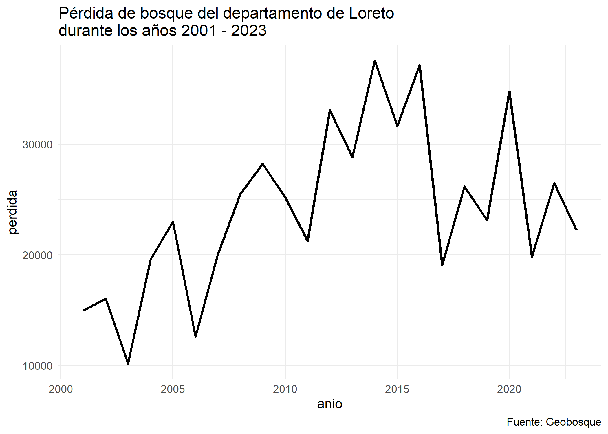

The goal of geoidep📦 is to offers R users an easy and accessible way to obtain official cartographic data on various topics, such as society 🏛️, transport🚗, environment🌱, agriculture🌾, climate⛅️,among others.
This includes information provided by regional government entities and technical-scientific institutions, managed by the Spatial Data Infrastructure of Peru.
Installation
You can install the development version of geoidep like so:
install.packages('pak')
pak::pkg_install('ambarja/geoidep')or also the official version available on CRAN:
install.packages('geoidep')Example 01: Introducction
library(geoidep)
#>
#> ── Welcome to geoidep ──────────────────────────────────────────────────────────
#> ℹ geoidep is a wrapper that allows you to download cartographic data for Peru from R.
#> Currently, `geoidep` supports the following providers:
#> ✔ Geobosque
#> ✔ INEI
#> ✔ Midagri
#> ✔ Sernanp
#> ℹ For more information, please use the `get_data_sources()` function.In this example, we can identify the list of providers available in geoidep and the layers they present.
get_data_sources() |>
head()
#> # A tibble: 6 × 7
#> provider category layer layer_can_be_actived admin_en year link
#> <chr> <chr> <chr> <lgl> <chr> <chr> <chr>
#> 1 INEI General departamento TRUE Nationa… 2019 http…
#> 2 INEI General provincia TRUE Nationa… 2019 http…
#> 3 INEI General distritos TRUE Nationa… 2019 http…
#> 4 Midagri Agriculture vegetation_cov… TRUE Ministr… 2018 http…
#> 5 Midagri Agriculture agriculture_se… TRUE Ministr… 2024 http…
#> 6 Midagri Agriculture oil_palm_areas TRUE Ministr… 2016… http…In summary the suppliers and the number of available layers
get_providers()
#> # A tibble: 4 × 2
#> provider layer_count
#> <fct> <int>
#> 1 Geobosque 5
#> 2 INEI 3
#> 3 Midagri 4
#> 4 Sernanp 61Example 02: Download official INEI administrative boundaries
This is a simple example of how to download Peru’s official administrative boundaries:
dep <- get_departaments(show_progress = FALSE)The first 10 rows of the original data are displayed here:
head(dep)
#> Simple feature collection with 6 features and 6 fields
#> Geometry type: MULTIPOLYGON
#> Dimension: XY
#> Bounding box: xmin: -79.45857 ymin: -17.28501 xmax: -70.80408 ymax: -2.986125
#> Geodetic CRS: WGS 84
#> id OBJECTID CCDD NOMBDEP SHAPE_Length SHAPE_Area
#> 1 1 1 01 AMAZONAS 13.059047 3.199147
#> 2 2 2 02 ANCASH 11.788249 2.954697
#> 3 3 3 03 APURIMAC 7.730154 1.765933
#> 4 4 4 04 AREQUIPA 17.459435 5.330125
#> 5 5 5 05 AYACUCHO 17.127166 3.643705
#> 6 6 6 06 CAJAMARCA 12.540288 2.688386
#> geom
#> 1 MULTIPOLYGON (((-77.81399 -...
#> 2 MULTIPOLYGON (((-77.64697 -...
#> 3 MULTIPOLYGON (((-73.74655 -...
#> 4 MULTIPOLYGON (((-71.98109 -...
#> 5 MULTIPOLYGON (((-74.34843 -...
#> 6 MULTIPOLYGON (((-78.70034 -...Example 03: Working with Gebosque data
This is another example of how to obtain historical forest loss data according to a given administrative boundary.
loreto <- dep |> filter(NOMBDEP == "LORETO")
historico <- get_forest_loss_data(
layer = "stock_bosque_perdida_departamento",
ubigeo = loreto[["CCDD"]],
show_progress = FALSE)
historico |>
ggplot(aes(x = anio,y = perdida )) +
# geom_bar(stat = "identity") +
geom_line(linewidth =1) +
theme_minimal() +
labs(
title = "Pérdida de bosque del departamento de Loreto \ndurante los años 2001 - 2023",
caption = "Fuente: Geobosque")